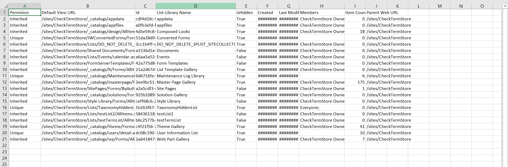

Export all List and Libraries with Item count and Permission in CSV
Summary
Get all lists and Libraries along with total Item count and permissions and export it in CSV file using below power shell script.

CLI version of the script works the same but does not retrieve permissions information from the list

# Make sure necessary modules are installed
# PnP PowerShell to get access to M365 tenent
Install-Module PnP.PowerShell
$siteURL = "https://tenent.sharepoint.com/sites/Dataverse"
$ReportOutput="C:\SiteInventory.csv"
$ResultData = @()
$UniquePermission = "";
# -UseWebLogin used for 2 factor Auth. You can remove if you don't have MFA turned on
Connect-PnPOnline -Url $siteUrl
# get all lists from given SharePoint Site collection
$lists = Get-PnPList -Includes HasUniqueRoleAssignments,RoleAssignments
If($lists.Count -gt 0){
foreach($list in $lists){
$members = "";
if($list.HasUniqueRoleAssignments -eq $false){
$UniquePermission = "Inherited"
}
if($list.HasUniqueRoleAssignments -eq $true){
$UniquePermission = "Unique"
}
if($list.RoleAssignments.Count -gt 0){
foreach($roleAssignment in $list.RoleAssignments){
$property = Get-PnPProperty -ClientObject $roleAssignment -Property Member
$members += $property.Title + ";"
}
}
$ResultData+= New-Object PSObject -Property @{
'List-Library Name' = $list.Title;
'Id'=$list.Id;
'Parent Web URL'=$list.ParentWebUrl;
'Item Count' = $list.ItemCount;
'Last Modified' = $list.LastItemUserModifiedDate.ToString();
'Created'=$list.Created;
'Default View URL'=$list.DefaultViewUrl;
'Permision'=$UniquePermission;
'Members'=$members;
'isHidden'=$list.Hidden;
}
}
}
$ResultData | Export-Csv $ReportOutput -NoTypeInformation
Check out the PnP PowerShell to learn more at: https://aka.ms/pnp/powershell
The way you login into PnP PowerShell has changed please read PnP Management Shell EntraID app is deleted : what should I do ?
Contributors
| Author(s) |
|---|
| Dipen Shah |
| Adam Wójcik |
| Alex Talarico |
Disclaimer
THESE SAMPLES ARE PROVIDED AS IS WITHOUT WARRANTY OF ANY KIND, EITHER EXPRESS OR IMPLIED, INCLUDING ANY IMPLIED WARRANTIES OF FITNESS FOR A PARTICULAR PURPOSE, MERCHANTABILITY, OR NON-INFRINGEMENT.